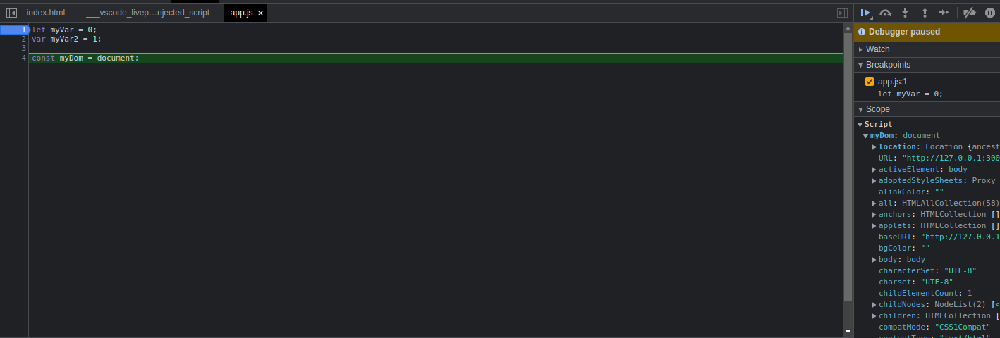

Ejercicio Clase 1
Biografía
Nací un 17 de Agosto de 1987, en una clínica de la Ciudad de Buenos Aires.
Crecí con mi familia, descendiente de Italianos, y desde chico me mostré apasionado por las letras, tanto en música cómo en literatura.
Durante el secundario, aprovechaba cada tarea o Trabajo Práctico que tuviera relación con la escritura creativa, desde Scripts y guiones hasta cuentos cortos.
Tras trabajar en diversas áreas, iniciar distintas carreras me recibí a mis 30 años como Instruemntador Quirúrgico.
Actualmente me encuentro trabajando en Seguridad Informática, estudiando en el plan Codo a Codo, el curso de Testing y QA y el de React.
Teniendo como objetivo final poder ser un real DevSecOps.
Mientras tanto, continúo con la escritura, entrenando Tae-Kwon-Do y tocando en mi banda Freya's Favor.
En el año 2021, el 23 de Febrero para ser más exacto, me casé con Evelyn, el amor de mi vida. Fue uno de los momentos más felices, que voy a recordar por siempre.
Actualmente estámos a nuestro hijo de 3 meses, Killian. Otro ser que llena de felicidad mi vida.
Proyectos Actuales
En éste momento, me encuentro escribiendo mi próxima Novela, "CyberSec Corp.: Tu Privacidad nos pertenece", la cual espero poder publicar algún día.
Si están interesados, pueden leer algunos de mis cuentos en: Tolfo Van Tolfus
Ejercicio clase 2
- Bootstrap agregado al Footer
- Imágen del Js ejecutándose en el Console.log 